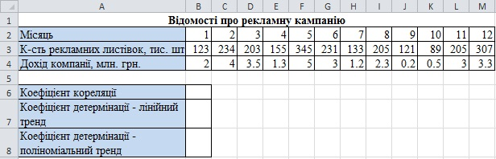
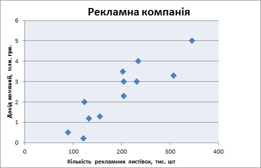
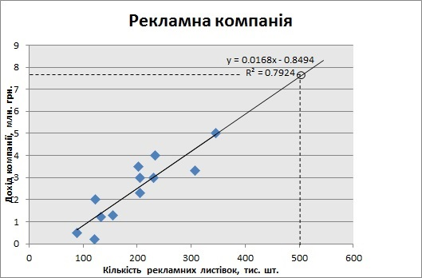

Вправа 7.5. Виявлення кореляційного зв'язку
Протягом року продовольча компанія здійснювала рекламу своєї продукції шляхом виготовлення та розповсюдження рекламних листівок у кількості від 89 000 до 345 000 шт. за місяць. Потрібно визначити, чи був цей захід ефективним та як вплине на дохід компанії виготовлення та розповсюдження протягом місяця 500 000 листівок.
- Створіть нову електронну таблицю, введіть у неї дані, зазначені на рис. 7.12, і збережіть документ у файлі Вправа_7_5.хlsx.
Оскільки нас цікавить залежність доходу від кількості поширених листівок, то кількість рекламних листівок є факторною ознакою, а дохід компанії – результативною.
Рис. 7.12. Таблиця з вихідними даними - Побудуйте для створеної таблиці точкову діаграму, скориставшись кнопкою (Майстер діаграм). На осі X має відображатися кількість листівок, на осі У – дохід компанії (рис. 7.13).
Як бачите, множина точок на діаграмі розсіювання витягнута зліва знизу вправо вверх. Це свідчить про існування прямого кореляційного зв'язку між кількістю розповсюджених рекламних листівок та доходом компанії.
Рис. 7.13. Залежність доходу компанії від кількості проданих рекламних листівок - Розрахуйте коефіцієнт кореляції, увівши в клітинку В6 формулу =СОRREL(ВЗ:МЗ;В4:М4). Отримане значення коефіцієнта кореляції (0,89) підтверджує висновок про наявність сильного прямого лінійного кореляційного зв'язку між кількістю розповсюджених рекламних листівок та доходом компанії. Отже, рекламний захід можна вважати ефективним.
- Додайте до точкової діаграми лінію тренду лінійного типу з відображенням регресійного рівняння та значення коефіцієнта детермінації на діаграмі. Величину прогнозу вперед задайте рівною 200. Отримане значення R2 = 0,7924 свідчить про те, що лінійна регресія достатньо добре відповідає вибірковим даним. Запишіть це значення у клітинці В7.
- Перегляньте графік лінії тренду та визначте за ним, на який приблизно дохід компанії можна розраховувати в разі поширення 500 000 рекламних листівок за місяць (рис. 7.14).

Рис. 7.14. Лінія тренду з прогнозом - Самостійно побудуйте поліноміальні лінії тренду другого і третього степенів. Порівняйте коефіцієнти детермінації та значення прогнозу для цих ліній тренду з відповідними значеннями для лінійного тренду. Зробіть висновки.